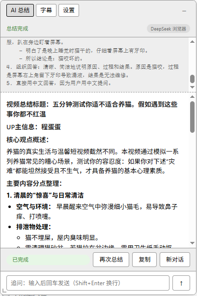
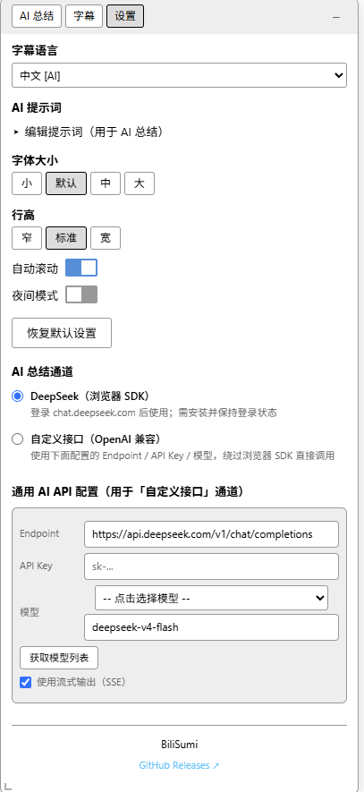

AI 总结页
显示流式总结结果，支持复制、新对话和继续追问。
BiliSummary 是一个面向 B 站视频的浏览器扩展。它会先读取当前视频字幕，再用 AI 生成结构化总结；总结完成后还能继续追问，并支持导出 SRT。
安装后网页右上角会常驻图标浮窗，点击即可弹出主窗体。
打开 B 站视频页后，扩展会抓取可用字幕内容，作为后续总结输入。
点击开始总结后，AI 会根据字幕输出更适合阅读和复盘的摘要内容。
总结完成后可以接着问细节、要点或结论，不需要重新整理一遍字幕。
可以直接使用 DeepSeek 浏览器 SDK，也可以配置自定义 OpenAI 兼容接口。
如果你想自己留档或交给其他工具继续处理，可以把字幕导出为 SRT 文件。

显示流式总结结果，支持复制、新对话和继续追问。

配置字幕语言、提示词、显示选项和 AI 通道参数。
适用于 Chrome 和 Edge。
chrome://extensions/，Edge 使用 edge://extensions/。
manifest.json 的目录。